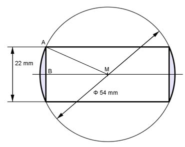

Aufgabe 394 Wie groß ist die Masse m des Rings, wenn er eine Dichte von 21,4 g/cm³ hat?  VRing = 2 * (VKugelschicht - VZylinder) Satz von Pythagoras im Dreieck MAB: MA = rKugel = 54 mm/2 = 27 mm AB = 22 mm/2 = 11 mm = hKugelschicht = hZylinder MA² = AB² + MB² |-AB² MB² = MA² - AB² = 27² mm² - 11² mm² = 608 mm² |√ MB = 24,66 mm = r1 r2 = 54 mm/2 = 27 mm л VKugelschicht = --- * hKugelschicht * (3 * r1² + 3 * r2² + hKugelschicht²) 6 л VKugelschicht = --- * 11 * (3 * 24,66² + 3 * 27² + 11²) mm³ 6 VKugelschicht = 23 788,5 mm³ VZylinder = л * r1² * hZylinder = л * 24,66² * 11 mm³ = 21 004,3 mm³ VRing = 2 * ( 23 788,5 - 21 004,3) mm³ = 5 568 mm³ = 5,568 cm³ m = VRing * ρ = 5,568 cm³ * 21,4 g/cm³ = 119 g